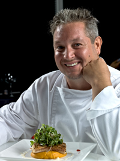
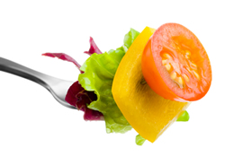

These tributes honor the cooks, teachers, and community members who have shaped Native Cooking of Utah.

Grandmother Lopez taught three generations the value of slow cooking and seasonal ingredients. Her green-chile stew and berry preserves remain the most requested recipes on the site. She believed every meal should tell a story of the land and the people who worked it.
“Food is memory,” she often said. “When you share a recipe, you share a piece of history.”

Without the farmers who supply fresh produce, berries, and grains, Native Cooking of Utah would not exist. Their dedication to sustainable practices keeps traditional flavors alive and supports local communities.
Volunteer instructors who lead our Dutch-oven classes and seasonal workshops give their time freely so that anyone can learn authentic techniques. Their enthusiasm has turned first-time cooks into lifelong students of Utah cuisine.
We thank every person who has shared a kitchen, a story, or a favorite recipe with us.